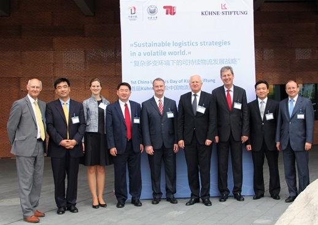
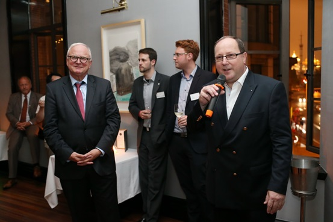

The Previous review
Tongji University, SHANGHAI 4TH JUNE 2012
More than 220 guests from academia and industry, trade and service sector participated in this event and discussed about “Sustainable Logistics Strategies in a Volatile World”. The Vice-President of Tongji University, Prof. DONG Qi, as well as the Consul General of the Federal Republic of Germany, Dr. Wolfgang Röhr, gave the welcome notes and the first presentation was given by the former Minister of Transport of China, Mr. QIAN Yong Chang, who is now Chairman of China Communications & Transportation Association. More representatives of the logistics industry gave insights into their companies logistics strategies and encouraged to discussions during the intervals and the gala dinner in the evening. The 1st China Logistics Day of Kuehne Foundation also attracted numerous high ranking officials from overseas who travelled to Shanghai in order to participate at the Transport Logistics Fair which started one day later.

Prof. Dr. Alan C. McKinnon, KLU ,Prof. Dr. ZHANG Sidong, CDHK, Tongji University, Amelie Saupe,
Mr. JIANG Baker, Wal- Mart China,Dr. Jorg Biesemann, Continental Automotive Holding Co., Ltd,
Martin Willhaus, Kühne- Stiftung ,Mr. Michael Bünning, BLG CINKO Auto Logistics (Tianjin) Ltd.Co., SONG Robert, Air Bridge Cargo Airlines,Prof. Dr. Frank Straube,TU Berlin
Miissing:
Mr. LIU Bruce, BLG CINKO Auto Logistics(Tianjin) Ltd.Co.
Second Kuehne Foundation China Logistics Day
Tongji University, SHANGHAI 16th Jun, 2014
As is known to all, logistics plays an even more important role in nowadays world of industry globalization, population urbanization, and business digitalization. It is expected that by 2050, a tremendous scale of logistics will be needed to satisfy people’s demand as 70% of the global population will live in cities. The event provides an excellent opportunity among government, academic circle, and industries to explore and discuss how logistics industry could better provide services to satisfy the future demands and to further inspire innovative academic research orientation.
Kuehne Logistics Day is held once every year in Germany and once every two years in Shanghai. The public-benefit Kühne-Stiftung (Foundation) was established by the Kühne family in Switzerland in 1976. The Kühne-Stiftung is an operational fund which implements and initiates most of its support projects itself. The deed of foundation specifies the following two main areas of support:
1.Support for training, further education, scholarships and research in the fields of transport and logistics.
2.Support for medical sciences, humanitarian, charitable and cultural projects.

Dr. Thomas Wimmer, Chair of Managing Board of BVL (German Logistics Association)